← Research · Collaboration
Field-enhanced dissociation of buffer species
ACS Electrochemistry · 2025
Strong interfacial electric fields can accelerate the dissociation of protonated buffer species, changing the local pH near electrodes and membranes.
Key findings
- Generalised modified Poisson–Nernst–Planck model with electric-field-enhanced (second Wien effect) dissociation, for unbuffered KClO4 and buffered carbonate and phosphate electrolytes.
- With buffers, field-enhanced protolysis lets free protons act as HER reactants above several hundred mA cm−2.
- In the diffuse layer the effective proton concentration exceeds the bulk value.
- A strong field sensitivity can overestimate water dissociation, especially in unbuffered electrolytes.
What I did
- Numerical analysis of field-enhanced homogeneous dissociation of protonated buffer species.
M. Wada, K. Obata, V. G. Agarwal, F. Lorenzutti, S. Haussener, K. Takanabe, ACS Electrochemistry (2025).